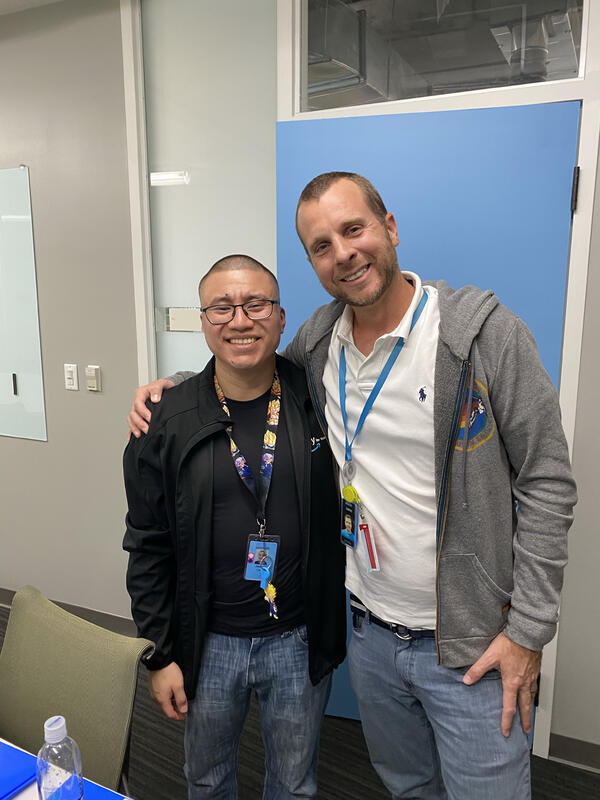

01 / REPORTING
Operational KPI Tracking
Organized spreadsheet-based information to support clearer monitoring and review of customer support performance.
02 / AMAZON · RING · KEY FOR BUSINESS
Turning frontline customer insights into operational improvements through analytics, documentation, stakeholder coordination and executive communication.
As a Technical CS Associate supporting Amazon Key for Business and Ring, I extended my work beyond day-to-day technical troubleshooting to help strengthen operational reporting, customer handoffs, knowledge management and cross-functional problem solving.
EXPERIENCE
Working with customers and partners gave me a practical view of how clear information, consistent documentation, and coordinated follow-up contribute to the support experience.
Explore four areas of my work below, from operational reporting and knowledge management to executive communication.

FOUR AREAS OF WORK
Developed Excel and SharePoint-based tracking resources to support more consistent reporting and review of customer support activity. I also explored better ways to classify contact reasons and surface recurring operational issues.
Organized spreadsheet-based information to support clearer monitoring and review of customer support performance.
Designed a more granular approach to classifying customer contact reasons for trend analysis and operational follow-up.
Contributed reporting ideas intended to help stakeholders identify recurring issues and opportunities for improvement.
Identified practical opportunities to improve how customer inquiries and operational information moved between teams, with an emphasis on accuracy, consistent documentation and clear ownership.
Developed a structured intake and referral approach for prospective business customers seeking the appropriate sales team.
Reviewed onboarding information for completeness and consistency to support reliable downstream coordination.
Communicated operational gaps and recommendations to relevant stakeholders to support issue resolution and smoother handoffs.
Selected as one of two specialists to help build the Support department's first Knowledge Base. The initiative strengthened how technical guidance could be organized and shared, and my contribution received an Amazon Accolade.
Recognized for my contribution to a foundational Support Knowledge Base initiative.
Amazon Accolades recognize colleagues for contributions connected to Amazon's Leadership Principles.
Authored and improved general support guidance to make reusable information more accessible and consistent.
Reported customer-facing application issues, proposed improvements and supported customer solutions across international markets.
Developed a seven-page narrative proposal and presented it to Ring leadership in Las Vegas. The experience sharpened my ability to organize observations, develop structured recommendations and communicate ideas to senior stakeholders.
Prepared a structured written proposal that brought together business observations, recommendations and supporting rationale.
Presented the proposal to Ring leadership, demonstrating initiative and the ability to communicate beyond my immediate operational responsibilities.
A general framework summarizing the professional skills demonstrated across these initiatives. It does not reproduce Amazon's internal workflows.
My experience supporting Amazon Key for Business and Ring reinforced the importance of understanding recurring customer problems and looking beyond the immediate interaction. Reporting, documentation, cross-functional collaboration and executive communication became central to how I approach operational improvement.
PUBLIC PORTFOLIO NOTE
This is an independent professional portfolio and is not affiliated with, sponsored by or endorsed by Amazon or Ring. References to Amazon, its subsidiaries, products and services describe professional experience and provide context. Work descriptions are intentionally generalized and do not reproduce confidential documents, internal operational workflows or unpublished product proposals. No claim is made of ownership of, or responsibility for developing, existing Amazon or Ring products or services. Publicly available product information may describe offerings that differ from those available during my employment and does not imply I supported those later offerings.